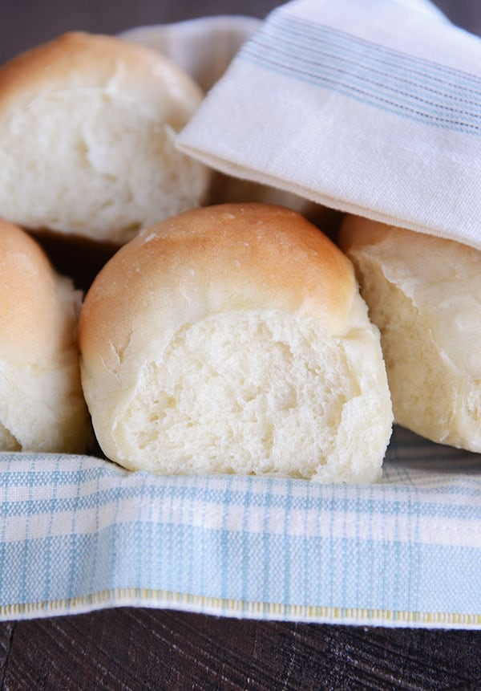

Bread Rolls

This easy dinner rolls recipe comes together very quickly. No kneading or
mixer required and the rolls come out very fluffy with great flavor in under an hour.
Ingredients
- 2 1/4 teaspoons instant dry yeast
- 1 cup milk (warmed to 110 degrees F)
- 1/4 cup honey
- 6 tablespoons melted salted butter
- 1 large egg
- 2.5-3 cups all-purpose flour
Instructions
- In a large mixing bowl, whisk together the warm milk, honey, and yeast:
until yeast and honey are dissolved.
- Whisk in salt, egg, and 4 tablespoons of the melted butter and combine well.
- Add flour to the bowl 1/2 cup at a time until the dough easily comes off the
sides and forms a sticky ball in the center.
- Grease bottom of a 9" round pan with 1 tablespoon of the butter.
- Form 12 equal-ish balls with the dough and place them in the pan.
- Preheat oven to 400 degrees F. While preheating, set the rolls somewhere warm and cover with a towel for 20-30 min.
- Bake for 25 min (or until golden brown).
- When done, brush with the remaining tablespoon of butter.